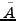
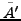
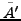
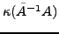
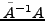
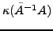
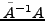

The finite element method is one of the most popular numerical techniques for solving partial differential equations (PDEs), especially over complex domains. The finite element discretization of second order elliptic PDEs gives a large sparse linear system of equations that can be solved by iterative methods such as the preconditioned conjugate gradient method.
Support graph preconditioning is a relatively new technique to construct preconditioners. A support graph is a subgraph of the graph associated with the sparse matrix which is obtained by eliminating certain edges. The matrix corresponding to the support graph is used as a preconditioner. This approach has several attractive features. The scheme yields robust preconditioners whose effectiveness can be increased at the expense of additional memory during the edge elimination process itself. The quality of the preconditioner appears to be relatively insensitive to boundary conditions and domain characteristics such as anisotropy and inhomogeneity. In addition, there are theoretical results to quantify the behavior of the preconditioner. A recent study shows that this approach can be used to solve the system in almost linear time.
A major limitation of the original support graph approach was that the
coefficient matrix  had to be a symmetric, positive semi-definite, and
diagonally dominant M-matrix. In recent years, the support graph idea has
been extended to a larger class of matrices: maximum weight bases
preconditioner has been proposed for symmetric diagonally dominant
matrices; techniques have been proposed for matrices arising from the
finite element discretization of elliptic problems.
had to be a symmetric, positive semi-definite, and
diagonally dominant M-matrix. In recent years, the support graph idea has
been extended to a larger class of matrices: maximum weight bases
preconditioner has been proposed for symmetric diagonally dominant
matrices; techniques have been proposed for matrices arising from the
finite element discretization of elliptic problems.
In this talk, we describe a technique to extend support graph
preconditioners to symmetric positive definite matrices arising in the
finite element discretization of elliptic problems. Our approach uses
element-level coordinate transformations to construct a symmetric
positive definite diagonally dominant M-matrix  that can be
used to approximate  . A support graph preconditioner
. A support graph preconditioner  for
 is constructed in the usual way, and used as a
preconditioner for
for
 is constructed in the usual way, and used as a
preconditioner for  . In order to have an effective preconditioner, it
is necessary to construct an accurate approximation that
guarantees that the condition number
 will be
small. In our approach the condition number of matrix

is bounded as a function of the mesh angles. We show that this property
holds for the common triangular elements and quadrilateral elements, as
well as their three-dimensional counterparts. The element-level
coordinate transformations can be extended easily to other types of
Lagrangian elements. Our approach is simple, effective, easy to analyze
and is applicable to a large class of problems.
. In order to have an effective preconditioner, it
is necessary to construct an accurate approximation that
guarantees that the condition number
 will be
small. In our approach the condition number of matrix

is bounded as a function of the mesh angles. We show that this property
holds for the common triangular elements and quadrilateral elements, as
well as their three-dimensional counterparts. The element-level
coordinate transformations can be extended easily to other types of
Lagrangian elements. Our approach is simple, effective, easy to analyze
and is applicable to a large class of problems.